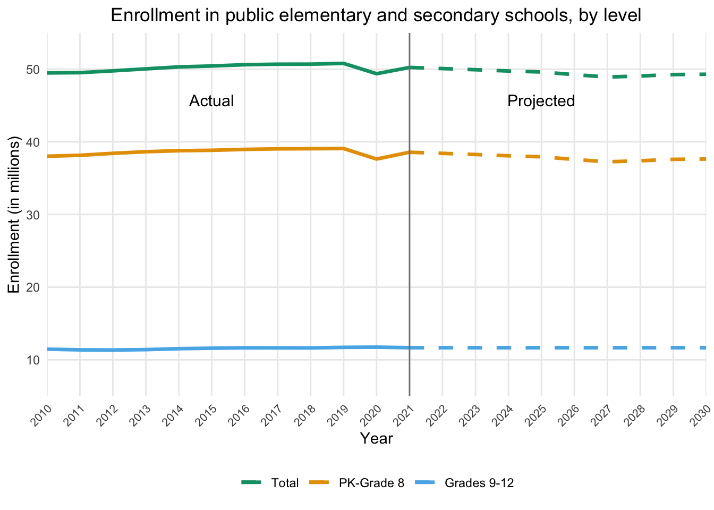

Projecting Elementary and Secondary School Enrollment
Education Statistics
Enrollment Projections
Forecasting Methods
Data Analysis
Data Visualization
Educational Planning
Time Series Analysis
A comprehensive methodology for projecting elementary and secondary school enrollment using statistical techniques
Introduction
According to the National Center for Education Statistics (NCES), total public and private elementary and secondary school enrollment was 56 million in fall 2019, representing a three percent increase since fall 2010. However, between fall 2019 and the first fall of the coronavirus pandemic in 2020, enrollment decreased two percent. From fall 2020 to fall 2030, enrollments are expected to decrease another six percent. Both public and private school enrollments are projected to be lower in 2030 than in 2019.
Accurate enrollment projections in elementary and secondary institutions are crucial for several reasons:
Budgeting and resource allocation: Enrollment projections help school districts plan their budgets effectively. By estimating the number of students expected to attend, districts can allocate resources appropriately, ensuring they have enough teachers, classrooms, and educational materials to meet the demand.
Short-term and long-term planning: Enrollment projections inform both short-term and long-term decision-making. In the short term, they help determine staffing needs and budgeting for specific programs. In the long term, they assist in planning for capital projects, such as building new schools or expanding existing facilities.
Public trust and support: Accurate enrollment projections can demonstrate the need for capital projects to the public, potentially influencing the outcome of school bond referenda. When the community understands the necessity of these projects based on reliable data, they are more likely to support them.
Accurate enrollment projections are vital for effective budgeting, resource allocation, short-term and long-term planning, maintaining public trust, ensuring financial stability, and informed decision-making in elementary and secondary institutions. With that said, many institutions lack a reliable means by which to make long-range enrollment forecasts. I’m here to help.
How to Project Enrollment
For this project, I attempted to emulate the work of the NCES, specifically their Projections of Education Statistics to 2030 (Irwin et al. 2024).
NoteClick here for a detailed methodology for projecting student enrollment using various statistical techniques.
Projection Techniques
There are several key methods that can be used for projecting student enrollment in elementary and secondary institutions such as ratio-based methods, regression-based methods, the dwelling unit multiplier method, and the extended demographic model. After some research and experimentation, I elected to use an exponential smoothing technique.
Exponential Smoothing
Single exponential smoothing is a forecasting method suited for data that is relatively stable over time, where future values are expected to be around the same central value as observed historically, without significant shifts up or down. In developing projections of elementary and secondary enrollments, for example, the rate at which students progress from one particular grade to the next (e.g., from grade 2 to grade 3) can be projected using single exponential smoothing. Thus, this percentage is assumed to be constant over the forecast period.
Generally, exponential smoothing places more weight on recent observations than on earlier ones. The weights for observations decrease exponentially as one moves further into the past. As a result, the older data have less influence on the projections. The rate at which the weights of older observations decrease is determined by the smoothing constant.
When using single exponential smoothing for a time series, \(P_t\), a smoothed series, \(P\), is computed recursively by evaluating where \[\hat{P}_t = \alpha~P_t + (1 - \alpha) P_{t-1}\]\(0 < \alpha \leq 1\) is the smoothing constant.
By repeated substitution, we can rewrite the equation as \[ P_t = \alpha \sum_{s=0}^{t-1} (1 - \alpha)^s P_{t-s}\]where time, \(s\), goes from the first period in the time series, \(0\), to time period \(t-1\). The forecasts are constant for all years in the forecast period. The constant equals \[\hat{P}_{T+k} = \hat{P}_t\]where \(t\) is the last year of actual data and \(k\) is the \(k^{th}\) year in the forecast period where \(k > 0\).
These equations illustrate that the projection is a weighted average based on exponentially decreasing weights. For higher smoothing constants, weights for earlier observations decrease more rapidly than for lower smoothing constants.
Approach Overview
I utilized the grade progression rate method to project grades 2 through 12. With this approach, a rate of progression from each grade (1 through 11) to the next grade (2 through 12) was projected using single exponential smoothing. For example, the rate of progression from grade 2 to grade 3 is the current year’s grade 3 enrollment expressed as a percentage of the previous year’s grade 2 enrollment. To calculate enrollment for each year in the forecast period, the progression rate for each grade was applied to the previous year’s enrollment in the previous grade.
I also utilized the enrollment rate method to project prekindergarten, kindergarten, and first-grade enrollments as well as elementary and secondary ungraded enrollments. In this method, an enrollment rate for each grade (or ungraded level) was projected using single exponential smoothing. For example, the enrollment rate for grade 1 is the number of students enrolled in grade 1 divided by the number of 6-year-old children. To calculate enrollment for each year in the forecast period, the enrollment rate for each category was applied to the projected population in the appropriate age group.
Assumptions Underlying This Approach
The grade progression rate method assumes that past trends affecting public and private elementary and secondary school enrollments will continue over the forecast period. This assumption implies that all factors influencing enrollments will display future patterns consistent with past patterns. This method implicitly includes the net effect of such factors as migration, dropouts, deaths, non-promotion, and transfers between public and private schools.
Limitations of Projections
Projections are complicated by the onset of the coronavirus pandemic in 2020. Projections are based on the assumption that historical patterns will continue into the future. This presents challenges both for (1) using prepandemic historical data to predict unprecedented pandemic-era behaviors and (2) using pandemic-era data to predict post-pandemic behaviors. This exercise includes both scenarios.
Even without a pandemic, projections of a time series usually differ from the final reported data due to errors from many sources, such as the properties of the projection methodologies, which depend on the validity of many assumptions. These projections should be interpreted with caution.
Procedures and Equations
The notation and equations that follow describe the basic procedures used to project elementary and secondary enrollments in each of the three elementary and secondary enrollment projection models.
Let:
\(i\) = Subscript denoting age
\(j\) = Subscript denoting grade
\(t\) = Subscript denoting time
\(T\) = Subscript of the first year in the forecast period
\(N_t\) = Enrollment at the prekindergarten (nursery) level
\(K_t\) = Enrollment at the kindergarten level
\(G_{j,t}\) = Enrollment
\(E_t\) = Enrollment in elementary ungraded programs
\(S_t\) = Enrollment in secondary ungraded programs
\(P_{i,t}\) = Population
\(R_{j,t}\) = Progression rate
\(RN_t\) = Enrollment rate for prekindergarten (nursery school)
\(RK_t\) = Enrollment rate for kindergarten
\(RG_{1,t}\) = Enrollment rate for grade 1
\(RE_t\) = Enrollment rate for elementary ungraded programs
\(RS_t\) = Enrollment rate for secondary ungraded programs.
Step 1. Calculate historical grade progression rates for each of grade. The first step in projecting the enrollments using the grade progression method was to calculate, for each grade, a progression rate for each year of actual data used to produce the projections except for the first year. The progression rate for grade \(j\) in year \(t\) equals \[R_{j,t} = \frac{G_{j,t}}{G_{j-1,t-1}}\]Step 2. Produce a projected progression rate for each of grades 2 through 12. Projections for each grade’s progression rate were then produced for the forecast period using single exponential smoothing. A separate smoothing constant, chosen to minimize the sum of squared forecast errors, was used to calculate the projected progression rate for each grade. Single exponential smoothing produces a single forecast for all years in the forecast period. Therefore, for each grade \(j\), the projected progression rate, \(\hat{R}_j\), is the same for each year in the forecast period.
Step 3. Calculate enrollment projections for each of grades 2 through 12. For the first year in the forecast period, \(T\), enrollment projections, \(\hat{G}_{j,T}\), for grades 2 though 12 were produced using the projected progression rates and enrollments of grades 1 though 11 from the last year of actual data, \(T–1\). Specifically, \[\hat{G}_{j,T} = \hat{R}_j \cdot \hat{G}_{j-1, T-1}\]This same procedure was then used to produce the projections for the following year, \(T+1\), except that enrollment projections for year \(T\) were used rather than actual numbers: \[\hat{G}_{j,T+1} = \hat{R}_j \cdot \hat{G}_{j,T}\] The enrollment projections for grades 2 through 11 for year \(T\) were those just produced using the grade progression method. The projection for grade 1 for year \(T\) was produced using the enrollment rate method as outlined in steps 4, 5, and 6 below.
The same procedure was used for the remaining years in the projections period.
Step 4. Calculate historical enrollment rates for prekindergarten, kindergarten, grade 1, elementary ungraded, and secondary ungraded. The first step in projecting prekindergarten, kindergarten, first-grade, elementary ungraded, and secondary ungraded enrollments using the enrollment rate method was to calculate enrollment rates for each enrollment category for the last year of actual data, \(T–1\), where: \[RN_t = \frac{N_t}{P_{5,t}}\] \[RK_t = \frac{K_t}{P_{5,t}}\] \[RG_{1,t} = \frac{G_{1,t}} {P_{6,t}}\] \[RE_t = \frac{E_t}{\sum_{i=5}^{13}P_{i,t}}\] \[RS_t = \frac{S_t}{\sum_{i=14}^{17}P_{i,t}}\] Step 5. Produce a projected enrollment rate for prekindergarten, kindergarten, grade 1, elementary ungraded, and secondary ungraded. Projections for each category’s enrollment rate were produced for the forecast period using single exponential smoothing. A separate smoothing constant, chosen to minimize the sum of squared forecast errors, was used to calculate the projected enrollment rate for each of these grades (or ungraded levels), specifically for prekindergarten, kindergarten, grade 1, elementary ungraded, and secondary ungraded. Single exponential smoothing produces a single forecast for all years in the forecast period. These enrollment rates were then used as the projected enrollment rates for each year in the forecast period (\(\hat{RN}\), \(\hat{RK}\), \(\hat{RG}_1\), \(\hat{RE}\), and \(\hat{RS}\)).
Step 6. Calculate enrollment projections for prekindergarten through grad 1 and the ungraded categories. For each year in the forecast period, the enrollment rates were then multiplied by the appropriate population projections (\(\hat{P_{i,t}}\)) to calculate enrollment projections for prekindergarten (\(\hat{N_t}\)), kindergarten (\(\hat{K_t}\)), first grade (\(\hat{G}_{1,t}\)), elementary ungraded (\(\hat{E}_t\)), and secondary ungraded (\(\hat{S}_t\)).\[\hat{N}_t = \hat{RN} \cdot \hat{P}_{5,t}\] \[\hat{K}_t = \hat{RK} \cdot \hat{P}_{5,t}\] \[\hat{G}_{1,t} = \hat{RG}_1 \cdot \hat{P}_{6,t}\] \[\hat{E}_t = \hat{RE} \cdot \sum_{i=5}^{13}\hat{P}_{i,t}\] \[\hat{S}_t = \hat{RS} \cdot \sum_{i=14}^{17}\hat{P}_{i,t}\] Step 7. Calculate total elementary and secondary enrollments by summing the projections for each grade and the ungraded categories. To obtain projections of total enrollment, projections of enrollments for the individual grades, elementary ungraded, and secondary ungraded were summed.
By following these steps and utilizing the provided methodologies, I can project national public school enrollments from 2021 through 2030 with a reasonable degree of accuracy.
Tools Utilized
There are numerous tools to select from when tackling a project like this. Instead of delving into the various options, I decided to simply tell you what I used:
- Microsoft Excel
- Posit RStudio Desktop1
- This required an installation of R, the programming language.
TipGetting Started With R
If you’re new to R, there are many resources out there to help you get started. I recommend R for the Rest of Us, particularly their Getting Started With R and Fundamentals of R courses.
Enrollment Projection Process
Process Overview
The process for forecasting student enrollment by grade level and total enrollment using historical data begins by viewing the enrollment data in Excel and making some minor adjustments before loading it into RStudio. It calculates enrollment rates for various grades based on historical and projected population data, then applies exponential smoothing to the historical data to create a trend. Using historical progression rates, future enrollments from 2021 to 2030 are projected. It combines actual and projected data, filters for the years 2010 to 2030, and creates aggregate columns for PK-Grade 8, Grades 9-12, and Total enrollments. The data is reshaped for plotting, and a line plot is generated. The plot visualizes enrollment trends, distinguishing between actual and projected data.
Data Used
For this exercise, I utilized data from the NCES’s Digest of Education Statistics’ Enrollment in public elementary and secondary schools, by level and grade: Selected years, fall 1980 through fall 2030. The dataset covers annual data from 1990 to 2020. it also includes data from 1980, 1985, and projections from 2021 through 2030 which I chose to ignore.
I also utilized Table B-1 and Table B-2 from the NCES’s Projections of Education Statistics to 2030. Table B-1 contains data on the population of prekindergarten- and kindergarten-age children from 2010 through 2030. Table B-2 contains data on the school-age population from 2010 through 2030, with the values. Both datasets include actual values for the years 2010 through 2020 and projected values from 2021 onward (Irwin et al. 2024).
Data Loading and Preparation
To use the data, I initially had to modify the spreadsheet in Excel.
NoteClick here for details.
First, I un-merged cells A3:A4, B3:B4, and D4:E4. Then, I moved “Year” and “All” from cells A3 and B3 to cells A4 and B4. I also had to modify the remaining cells in row 4:
- Cell C4 from “Total” to “Total PK-8”
- Cell D4 from “Prekinder- garten” to “Prekindergarten”
- Cell F4 from ” Kinder-garten” to “Kindergarten”
- Cell G4 from ” 1st grade” to “1st grade”
- Cell H4 from ” 2nd grade” to “2nd grade”
- Cell I4 from ” 3rd grade” to “3rd grade”
- Cell J4 from ” 4th grade” to “4th grade”
- Cell K4 from ” 5th grade” to “5th grade”
- Cell L4 from ” 6th grade” to “6th grade”
- Cell M4 from ” 7th grade” to “7th grade”
- Cell N4 from ” 8th grade” to “8th grade”
- Cell O4 from “Un- graded\1” to “Ungraded PK-8”
- Cell P4 from “Total” to “Total 9-12”
- Cell Q4 from ” 9th grade” to “9th grade”
- Cell R4 from ” 10th grade” to “10th grade”
- Cell S4 from ” 11th grade” to “11th grade”
- Cell T4 from ” 12th grade” to “12th grade”
- Cell U4 from “Un- graded\1,2” to “Ungraded 9-12”
Additionally, I had to delete “\4” from cell A37. Finally, I deleted row 5 and I converted the spreadsheet from the .xls file format to .xlsx by saving it as .xlsx. After the data was in a usable state, I moved the project to RStudio.
Once in RStudio, the script begins by loading the readxl library for reading Excel files. The dplyr library is also loaded to facilitate data manipulation. The enrollment data is then read from an Excel file, specifically from a range of cells (A4:U37), with certain columns skipped, and the remaining columns are renamed for convenience. Similarly, population data, which includes projected school-age population by selected age groups from 2010 through 2030, is read from another Excel file. To calculate enrollment rates, the enrollment data is joined with the population data on the Year column. This allows the script to compute the enrollment rates for Prekindergarten, Kindergarten, 1st grade, and ungraded enrollments based on the respective age groups in the population data. The mean enrollment rates are then computed, which will be used for forecasting future enrollments.
NoteClick here to view the code I used.
# Load necessary libraries
library(readxl)
library(dplyr)
# Load enrollment data
enrollment <- read_excel(
"data/tabn203.10.xlsx",
sheet = "Digest 2021 Table 203.10",
range = "A4:U37",
col_types = c(
"numeric",
"skip",
"skip",
"numeric",
"skip",
"numeric",
"numeric",
"numeric",
"numeric",
"numeric",
"numeric",
"numeric",
"numeric",
"numeric",
"numeric",
"skip",
"numeric",
"numeric",
"numeric",
"numeric",
"numeric"
)
)
# Rename the columns for convenience
colnames(enrollment) <- c(
"Year",
"Prekindergarten",
"Kindergarten",
"1st_grade",
"2nd_grade",
"3rd_grade",
"4th_grade",
"5th_grade",
"6th_grade",
"7th_grade",
"8th_grade",
"9th_grade",
"10th_grade",
"11th_grade",
"12th_grade",
"Ungraded_PK_8",
"Ungraded_9_12"
)
# Load population data
population <- read_excel(
"data/actual_and_projected_school-age_populations_by_selected_ages-_2010_through_2030.xlsx",
sheet = "Sheet1",
col_types = c(
"numeric",
"numeric",
"numeric",
"numeric",
"numeric",
"numeric",
"numeric",
"numeric"
)
)
# Calculate enrollment rates for Prekindergarten, Kindergarten, 1st grade, and Ungraded enrollments
enrollment_rates <- enrollment %>%
inner_join(population, by = "Year") %>%
mutate(
Prekindergarten_rate = Prekindergarten / `3- to 5-year-olds`,
Kindergarten_rate = Kindergarten / `5-year-olds`,
first_grade_rate = `1st_grade` / `6-year-olds`,
Ungraded_PK_8_rate = Ungraded_PK_8 / `5- to 13-year-olds`,
Ungraded_9_12_rate = Ungraded_9_12 / `14- to 17-year-olds`
) %>%
summarise(
Prekindergarten_rate = mean(Prekindergarten_rate, na.rm = TRUE),
Kindergarten_rate = mean(Kindergarten_rate, na.rm = TRUE),
first_grade_rate = mean(first_grade_rate, na.rm = TRUE),
Ungraded_PK_8_rate = mean(Ungraded_PK_8_rate, na.rm = TRUE),
Ungraded_9_12_rate = mean(Ungraded_9_12_rate, na.rm = TRUE)
)Forecasting Functions
In this section, the script defines an exponential smoothing function to create smoothed trends from historical enrollment data. This function, exponential_smoothing, takes a time series and a smoothing parameter, alpha, as inputs. It initializes the result with the first value of the series and then iteratively applies the exponential smoothing formula: each subsequent value is a weighted average of the current actual value and the previous smoothed value. This technique helps reduce variability in the data, making trends more apparent and stable for forecasting purposes. The smoothed values produced by this function are crucial for generating accurate and reliable projections of future enrollments based on historical trends.
NoteClick here to view the code I used.
# Define exponential smoothing function to return full series
exponential_smoothing <- function(series, alpha = 0.3) {
result <- numeric(length(series))
result[1] <- series[1] # Initialize with the first value
for (i in 2:length(series)) {
result[i] <- alpha * series[i] + (1 - alpha) * result[i - 1]
}
return(result)
}Forecasting Enrollment
Here, the script utilizes the previously defined exponential smoothing function and calculated enrollment rates to project future enrollments from 2021 to 2030. Initially, the historical enrollment data is smoothed to reduce variability and create stable trends. A new dataframe is then created to hold projected enrollment values for each grade level. The script calculates progression rates, which represent the average proportion of students progressing from one grade to the next based on historical data. Using these rates, the script populates the projections dataframe, starting with the last smoothed value from the historical data and applying the progression rates for subsequent years. Specific projections for Prekindergarten, Kindergarten, 1st grade, and ungraded enrollments are computed using the enrollment rates and projected population data. This detailed approach ensures that the projections are grounded in historical trends and population forecasts, providing a comprehensive view of future enrollment patterns.
NoteClick here to view the code I used.
# Apply exponential smoothing to historical data
smoothed_values <- enrollment %>%
select(-Year) %>%
mutate(across(everything(), ~ exponential_smoothing(.x, alpha = 0.3)))
# Initialize projections dataframe
years <- 2021:2030
projections <- data.frame(Year = years)
# Calculate progression rates for grades 2 through 12
progression_rates <- enrollment %>%
summarise(across(starts_with("grade"), list(rate = ~ mean(
.x / lag(.x, 1), na.rm = TRUE
)), .names = "{col}_rate"))
# Populate the projections dataframe for grades with historical progression rates
for (grade in names(smoothed_values)) {
projections[[grade]] <- NA
projections[1, grade] <- tail(smoothed_values[[grade]], 1) # Initial value from smoothed historical data
for (year_index in 2:length(years)) {
rate <- progression_rates[[paste0(grade, "_rate")]]
if (!is.null(rate) && !is.na(rate)) {
projections[year_index, grade] <- projections[year_index - 1, grade] * rate
} else {
projections[year_index, grade] <- projections[year_index - 1, grade]
}
}
}
# Project Prekindergarten, Kindergarten, 1st grade, and Ungraded enrollments using enrollment rates
for (year_index in 1:length(years)) {
year <- years[year_index]
projections[year_index, "Prekindergarten"] <- population[population$Year == year, "3- to 5-year-olds"] * enrollment_rates$Prekindergarten_rate
projections[year_index, "Kindergarten"] <- population[population$Year == year, "5-year-olds"] * enrollment_rates$Kindergarten_rate
projections[year_index, "1st_grade"] <- population[population$Year == year, "6-year-olds"] * enrollment_rates$first_grade_rate
projections[year_index, "Ungraded_PK_8"] <- population[population$Year == year, "5- to 13-year-olds"] * enrollment_rates$Ungraded_PK_8_rate
projections[year_index, "Ungraded_9_12"] <- population[population$Year == year, "14- to 17-year-olds"] * enrollment_rates$Ungraded_9_12_rate
}Forecast Table
In this section, the gt library is loaded to facilitate the creation of well-formatted tables. The code takes the processed enrollment data and organizes it into a clear, easy-to-read format. It shows enrollment numbers for total students, prekindergarten through grade 8, and grades 9 through 12, with all numbers formatted as whole integers. The data is implicitly divided into “Actual” and “Projected” sections. The code applies various styling elements to enhance readability, such as right-aligning numeric columns, setting specific column widths, and using light gray backgrounds for row groups and column labels. The resulting table presents the enrollment data in a professional, organized manner that’s easy for viewers to understand and analyze.
NoteClick here to view the code I used.
# Load `gt` library
library(gt)
# Process the data
processed_data <- plot_data %>%
pivot_wider(names_from = Category, values_from = Enrollment) %>%
mutate(Type = ifelse(Year <= 2020, "Actual", "Projected"), across(c(Total, PK_Grade_8, Grades_9_12), ~ . * 1000)) %>%
select(Year, Type, Total, PK_Grade_8, Grades_9_12)
# Create the table
enrollment_table <- processed_data %>%
gt(groupname_col = "Type") %>%
tab_header(title = "School Enrollment Projections", subtitle = "2010-2030") %>%
fmt_number(columns = c(Total, PK_Grade_8, Grades_9_12),
decimals = 0) %>%
cols_label(PK_Grade_8 = "Pre-K through grade 8", Grades_9_12 = "Grades 9 through 12") %>%
cols_align(align = "right",
columns = c(Total, PK_Grade_8, Grades_9_12)) %>%
cols_width(Year ~ px(80),
Total ~ px(120),
PK_Grade_8 ~ px(200),
Grades_9_12 ~ px(160)) %>%
tab_options(
row_group.background.color = "#F0F0F0",
column_labels.background.color = "#E0E0E0",
table.border.top.style = "hidden",
table.border.bottom.style = "hidden",
data_row.padding = px(5)
) %>%
cols_hide(columns = c(Type)) # Hide the Type column
# Display the table
enrollment_table| Public School Enrollment Over Time and During the Pandemic | |||
| 2010-2030 | |||
| Year | Total | Pre-K through grade 8 | Grades 9 through 12 |
|---|---|---|---|
| Actual | |||
| 2010 | 49,484,181 | 38,019,738 | 11,464,443 |
| 2011 | 49,521,669 | 38,148,111 | 11,373,558 |
| 2012 | 49,771,118 | 38,419,219 | 11,351,899 |
| 2013 | 50,044,522 | 38,641,582 | 11,402,940 |
| 2014 | 50,312,581 | 38,778,978 | 11,533,603 |
| 2015 | 50,438,043 | 38,838,581 | 11,599,462 |
| 2016 | 50,615,189 | 38,960,887 | 11,654,302 |
| 2017 | 50,685,567 | 39,038,737 | 11,646,830 |
| 2018 | 50,694,061 | 39,054,837 | 11,639,224 |
| 2019 | 50,796,445 | 39,079,696 | 11,716,749 |
| 2020 | 49,375,467 | 37,632,044 | 11,743,423 |
| Projected | |||
| 2021 | 50,238,964 | 38,569,795 | 11,669,168 |
| 2022 | 50,084,028 | 38,414,783 | 11,669,245 |
| 2023 | 49,925,057 | 38,255,996 | 11,669,061 |
| 2024 | 49,749,962 | 38,081,082 | 11,668,880 |
| 2025 | 49,612,468 | 37,943,840 | 11,668,627 |
| 2026 | 49,244,974 | 37,576,673 | 11,668,301 |
| 2027 | 48,919,455 | 37,251,149 | 11,668,306 |
| 2028 | 49,062,110 | 37,393,774 | 11,668,336 |
| 2029 | 49,258,554 | 37,590,160 | 11,668,394 |
| 2030 | 49,298,918 | 37,630,442 | 11,668,476 |
Data Combination and Visualization
This R code performs a series of data manipulation and visualization tasks to create a line plot that displays the projected enrollment. It starts by combining actual enrollment data with projected figures, focusing on the years 2010 to 2030. The data is then organized into three main categories: PK-Grade 8, Grades 9-12, and Total enrollment. Using the ggplot2 library, the code generates a line plot that displays these enrollment numbers over time, measured in millions of students. The visualization distinguishes between historical data and future projections by using solid lines for actual data up to 2021 and dashed lines for projected data beyond that point. A vertical line at 2021 further emphasizes this distinction, with annotations clarifying which sections represent actual versus projected data. The plot uses different colors for each enrollment category, making it easy to differentiate between total enrollment and the two grade range subgroups. The x-axis spans from 2010 to 2030, while the y-axis shows enrollment figures. Various styling elements are applied to enhance the plot’s readability and visual appeal, including a centered title, a legend at the bottom, and angled x-axis labels to prevent overlapping. This comprehensive visualization allows viewers to easily compare enrollment trends across different grade ranges and see how these trends are expected to evolve in the coming years, providing a valuable tool for educational planning and analysis.
NoteClick here to view the code I used.
# Load `tidyr` and `ggplot2` libraries
library(tidyr)
library(ggplot2)
# Combine actual and projected data
combined_data <- bind_rows(enrollment %>% mutate(Type = "Actual"),
projections %>% mutate(Type = "Projected"))
# Filter data for the years 2010 to 2030
filtered_data <- combined_data %>% filter(Year >= 2010 &
Year <= 2030)
# Arrange the data in the required format and sort by Year
filtered_data <- filtered_data %>% arrange(Year)
# Create new columns for PK-Grade 8, Grades 9-12, and Total
filtered_data <- filtered_data %>%
mutate(
PK_Grade_8 = Prekindergarten + Kindergarten + `1st_grade` + `2nd_grade` + `3rd_grade` + `4th_grade` + `5th_grade` + `6th_grade` + `7th_grade` + `8th_grade` + Ungraded_PK_8,
Grades_9_12 = `9th_grade` + `10th_grade` + `11th_grade` + `12th_grade` + Ungraded_9_12,
Total = PK_Grade_8 + Grades_9_12
)
# Create a long format dataframe for plotting
plot_data <- filtered_data %>%
select(Year, PK_Grade_8, Grades_9_12, Total) %>%
pivot_longer(
cols = c(PK_Grade_8, Grades_9_12, Total),
names_to = "Category",
values_to = "Enrollment"
) %>%
mutate(Category = factor(Category, levels = c("Total", "PK_Grade_8", "Grades_9_12")))
# Create the line plot
enrollment_plot <- ggplot(plot_data, aes(x = Year, y = Enrollment / 1000, color = Category)) +
# Solid lines up to 2021
geom_line(data = subset(plot_data, Year <= 2021), linewidth = 1.2) +
# Dashed lines from 2021 onward
geom_line(data = subset(plot_data, Year >= 2021), linewidth = 1.2, linetype = "dashed") +
geom_vline(xintercept = 2021, color = "gray50") +
annotate(
"text",
x = 2015,
y = max(plot_data$Enrollment) / 1000 * 0.9,
label = "Actual",
size = 4
) +
annotate(
"text",
x = 2025,
y = max(plot_data$Enrollment) / 1000 * 0.9,
label = "Projected",
size = 4
) +
scale_color_manual(
values = c(
"Total" = "#009E73",
"PK_Grade_8" = "#E69F00",
"Grades_9_12" = "#56B4E9"
),
labels = c("Total", "PK-Grade 8", "Grades 9-12")
) +
scale_x_continuous(breaks = 2010:2030, expand = c(0, 0)) +
scale_y_continuous(
breaks = seq(0, 50, by = 10),
limits = c(5, 55),
expand = c(0, 0)
) +
coord_cartesian(xlim = c(2010, 2030)) +
labs(title = "Enrollment in public elementary and secondary schools, by level", x = "Year", y = "Enrollment (in millions)") +
theme_minimal() +
theme(
plot.title = element_text(hjust = 0.5),
legend.title = element_blank(),
legend.position = "bottom",
axis.text.x = element_text(
angle = 45,
hjust = 1,
size = 8
),
panel.grid.minor = element_blank()
)
# Print the plot
print(enrollment_plot)
Conclusion
This comprehensive methodology for projecting student enrollment in elementary and secondary schools provides a robust framework for educational planners and policymakers. By utilizing exponential smoothing techniques, grade progression rates, and enrollment rate methods, this approach offers a nuanced view of future enrollment trends from 2021 through 2030.
The process outlined here, from data preparation to visualization, allows for a detailed analysis of enrollment patterns across different grade levels and age groups. It takes into account historical trends, demographic shifts, and the potential long-term impacts of unprecedented events like the COVID-19 pandemic.
While these projections offer valuable insights for resource allocation, budgeting, and long-term planning in education, it’s crucial to interpret them with caution. The inherent limitations of forecasting, particularly in the face of unforeseen circumstances, underscore the need for regular updates and adaptations to these projections.
By combining rigorous statistical methods with clear data visualization, this approach not only aids in decision-making processes but also facilitates effective communication of enrollment trends to stakeholders. As the education landscape continues to evolve, such data-driven projections will play an increasingly vital role in shaping responsive and resilient educational systems.
References
Irwin et al. 2024. “Projections of Education Statistics to 2030.” NCES 2024-034. Washington, DC: U.S. Department of Education; National Center for Education Statistics.
Footnotes
RStudio Desktop is a standalone opensource application that does not store information on the internet. RStudio Desktop Pro, on the other hand, can or does. I’m not sure. If this is a concern for you, speak with Posit. They were very helpful helping the Florida UFSD determine whether their software is EdLaw 2-d compliant, which is always a concern when vetting new applications.↩︎